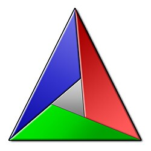

Linux und Open Source
Quick search
Navigation
Schulungen
Kursangebot
Unterlagen & Download
Topics
Python Programming: From Absolute Beginner to Advanced Productivity
The C Programming Language
C++: TODO List
C++: Miscellaneous Live-Hacking
C++
The New C++ (11-…)
Design Patterns With C++
C++ Code
C++ Exercises
CMake
CMake: Introduction
CMake: Advanced Topics
Linux
Is Software A Craft? Software Is A Craft! ⟶
Clean Code
Unit Testing With
googletest
Linux Kernel Driver Development
Generated Topic Graph
Organisatorisches
Datenschutz
Bisher Gehaltene
About
Über Mich
About This Site
Blog
Posts
CMake
¶

CMake: Introduction
CMake: Advanced Topics
Dependencies
¶
cluster_cmake
CMake
cluster_cmake_advanced
CMake: Advanced Topics
cluster_cmake_intro
CMake: Introduction
cmake_advanced_language_basics
CMake Language Basics
cmake_advanced_optional_code_approach_2
Optional Code, Approach 2: Pushing Optionality Down In Module Interface
cmake_advanced_optional_code_approach_1
Optional Code, Approach 1: Optional blacklist, C Macro (Global Flags)
cmake_advanced_optional_code_approach_2->cmake_advanced_optional_code_approach_1
cmake_advanced_testing
Running Tests
cmake_advanced_external_dependencies
External Dependencies
cmake_advanced_testing->cmake_advanced_external_dependencies
cmake_advanced_optional_code_problem
Optional Code: Problem Definition, OPTION()
cmake_advanced_optional_code_approach_1->cmake_advanced_optional_code_problem
cmake_advanced_configure_file
“Configured” Header Files
cmake_advanced_optional_code_problem->cmake_advanced_configure_file
cmake_advanced_targets_properties
Targets, Properties, And More
cmake_advanced_targets_properties->cmake_advanced_optional_code_approach_2
cmake_advanced_targets_properties->cmake_advanced_optional_code_approach_1
cmake_intro_libraries
Libraries, And Dependencies
cmake_advanced_targets_properties->cmake_intro_libraries
cmake_intro_structure
Structure - Subdirectories, Dependencies, and Include Paths
cmake_advanced_targets_properties->cmake_intro_structure
cmake_intro_cxx_and_rants
C++, Debug/Release, CMake “Programming”, Rants
cmake_advanced_configure_file->cmake_intro_cxx_and_rants
cmake_advanced_external_dependencies->cmake_advanced_targets_properties
cmake_intro_shared_libraries_preview
Shared Libraries (Preview)
cmake_intro_shared_libraries_preview->cmake_intro_libraries
cmake_intro_installation
Installation (“Deployment”)
cmake_intro_installation->cmake_intro_shared_libraries_preview
cmake_intro_installation->cmake_intro_libraries
cmake_intro_cxx_and_rants->cmake_intro_structure
cmake_intro_basics
Basics: Boilerplate, And Executables
cmake_intro_libraries->cmake_intro_basics
cmake_intro_structure->cmake_intro_installation
{kind=link}